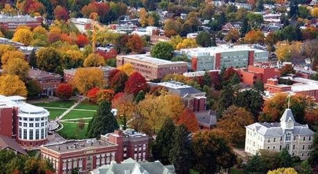
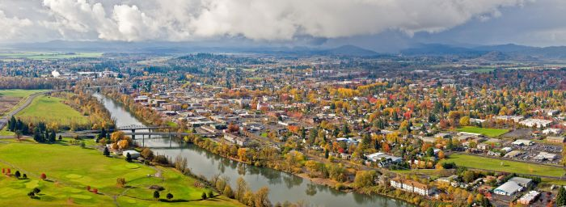
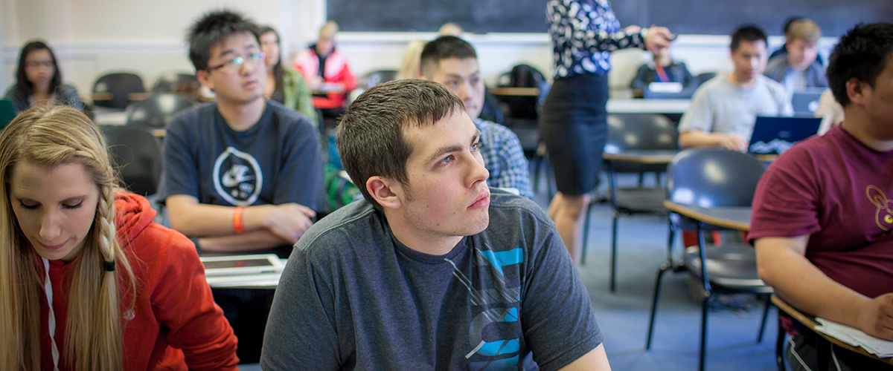

英文名称 Oregon State University 学校网站 oregonstate.edu 学校简介 俄勒冈州立大学是美国最著名的大学之一，该校为全美国和世界培养了大批各个行业的领袖人物，学术声誉极高。 美国 俄勒冈州立大学建于…
英文名称 Oregon State University
学校网站 oregonstate.edu
学校简介
俄勒冈州立大学是美国最著名的大学之一，该校为全美国和世界培养了大批各个行业的领袖人物，学术声誉极高。美国俄勒冈州立大学建于1868年，是一所百年名校，该校因其卓越的声誉和名誉而享誉全世界。2016年USNEWS排名第135位。作为美国历史最悠久的大学之一，俄勒冈州立大学参与并见证了世界以及美国历史上的许多重大事件。一百多年来，俄勒冈州立大学已经为全世界培养出了大批的领袖和精英人才，并培养出了多名诺贝尔奖得主。俄勒冈州立大学是美国最著名的大学之一，学术声誉极高，该校的录取非常严格，只有智商高、有潜力、综合素质非常优秀的学生才有可能被录取.俄勒冈州立大学的校训是：“让自由之光照耀世界”。俄勒冈州立大学诞生了多名诺贝尔奖得主和多名普利策奖得主，学校拥有大批各个科学领域内世界级的著名学者。世界上唯一的一名同时获得诺贝尔化学奖和诺贝尔和平奖的科学家鲍林就毕业于俄勒冈州立大学。俄勒冈州立大学每年获得的研究经费高达17亿美元。俄勒冈州立大学是全美国仅有的两所获得政府赠地以及参与海洋、航空、能源计划的大学之一（另一所大学是康奈尔大学）。

地理位置
俄勒冈州占地二十五万一千四百一十九平方公里，面积于全美五十州中排名第十。卡斯卡德山将该州区分为两个截然不同的地理区域。在卡斯卡德山以东的地区较为干燥，植物的生长也较为稀疏。而在卡斯卡德山以西、一直到太平洋沿岸的地区，植物的生长则极为茂密;海岸山地、克莱蒙斯山脉、威勒米特河谷、以及太平洋沿岸地区都位于西部地区中。此处有高山、溪流、山谷、丰富的矿藏、以及浓密的森林。哥伦比亚高原由卡斯卡德山以东向俄勒冈州的东北方延伸;这是一处地势崎岖的岩石地带，常可见被河流切割而造成的深邃峡谷。位于东南方的盆地/山地地区土地颇为干燥。俄勒冈主要的河流有位于东部的蛇河，以及位于北部的哥伦比亚河。该州主要的城市有∶波特兰(Portland)、尤金(Eugene)、沙伦(Salem，州首府)、葛雷森(Gresham)、以及比佛顿(Beaverton)。该州的人口大约有三百二十万。大学位于俄勒冈州科瓦利斯，一个只有55000人的小镇，气候颇为温和但相当潮湿。校园位于小城内，周遭春花似锦、绿草如茵，环境安全，距离波特兰市约90哩，距离太平洋海岸仅一小时车程。

专业课程设置
本科
文学(4个)
文科、德语、写作、流行音乐学
农学(3个)
园艺、农业、渔业与野生动物
历史学(1个)
理学(8个)
化学、心理学、环境科学、咨询服务学、自然资源学、科学和数学教育、地理信息科学、可持续自然资源
经济学(2个)
经济学、资源经济学
教育学(5个)
教育、科学和数学教育、幼儿教育、教育学-社区大学领导、教育学-组织与人力资源教育
管理学(4个)
工学(2个)
法学(6个)
政治科学、社会学、人类学、妇女研究、人类学、人类发展与家庭科学
硕士
文学(5个)
英语、跨学科研究、创意写作、当代西班牙研究、设计与人文环境
农学(14个)
圆艺、动物学、昆虫学、农学、水产科学、兽医学、动物科学、农业教育、作物科学、牧场生态与管理、野生物科学、可持续森林管理、植物学与植物病理学、森林生物系统与社会
理学(22个)
化学、数学、物理、微生物学、环境科学、地理学、地质学、统计学、数学教育、科学教育、咨询服务学、分子与细胞生物学、自然资源学、土地学、核能、医学物理学、食品科技、科学史、生物化学与生物物理学、有害辐射防护学、生物与生态工程、海洋地球与大气科学
经济学(1个)
教育学(7个)
教育、成人教育、数学教育、科学教育、教学、农业教育、运动和体育科学
管理学(6个)
工商管理、公共健康学、公共政策研究、建筑工程管理、海洋资源管理、水资源政策与管理
工学(12个)
计算机科学、化学工程、土木工程、机械工程学、电气与计算机工程、物质科学、工业工程、建筑工程管理、水资源科学、水资源工程、生物与生态工程、木材学
职教及其他类别(1个)
高校学生事务管理
医学(5个)
法学(5个)
人类发展与家庭研究、应用伦理学、应用人类学、森林生物系统与社会、水资源政策与管理
博士
文学(1个)
设计与人文环境
农学(11个)
圆艺、动物学、昆虫学、水产科学、动物科学、作物科学、牧场生态与管理、野生物科学、可持续森林管理、植物学与植物病理学、森林生物系统与社会
理学(20个)
化学、数学、物理、微生物学、环境科学、地理学、地质学、统计学、数学教育、咨询服务学、分子与细胞生物学、土地学、核能、医学物理学、食品科技、科学史、生物化学与生物物理学、有害辐射防护学、生物与生态工程、海洋地球与大气科学
经济学(1个)
应用经济学
教育学(4个)
教育、数学教育、运动和体育科学、理科教育
管理学(1个)
公共健康学
工学(11个)
计算机科学、化学工程、土木工程、机械工程学、电气与计算机工程、物质科学、工业工程、水资源科学、水资源工程、生物与生态工程、木材学
医学(5个)
药物学、公共健康学、毒理学、营养学、医学物理学
法学(3个)
人类发展与家庭研究、应用人类学、森林生物系统与社会
MBA
管理学(2个)
工商管理硕士、行政工商管理硕士
预科
农学(1个)
预备课程-兽医
教育学(1个)
预备课程-兽医
医学(1个)
预备课程-药学
语言中心
教育学(2个)
通用英语、学术英语
专科
文学(1个)
文化中的语言
医学(1个)
老年病学
法学(5个)
应用伦理学、和平研究、妇女研究、拉美事务、20世纪研究

入学要求
本科：托福 60-80 雅思 5.5-6.0 GPA 3.0
研究生：托福 80-91 雅思 6.5-7.0 GPA 3.0

学费情况
学费：$29900 - $30980/年
生活费：$12000/年
总费用：$42,000左右/年

本文由 辽宁留学服务有限公司 编辑发布，内容仅供留学规划参考，未经授权请勿转载。
政策法规、招生简章与项目费用等信息具有时效性，请以各国官方机构及院校最新发布为准；如需核实详情，请联系顾问。